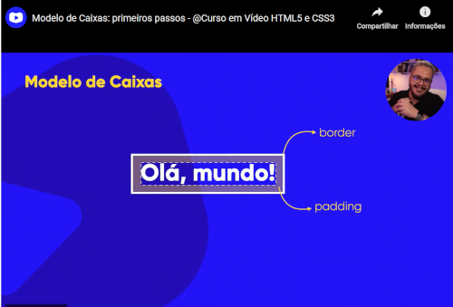
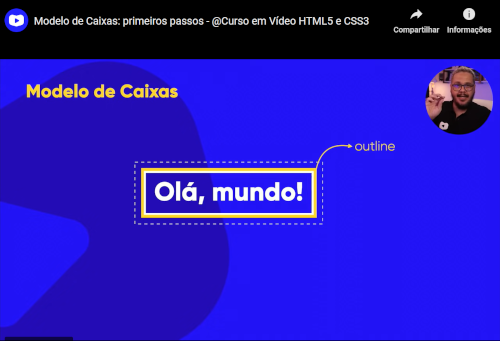
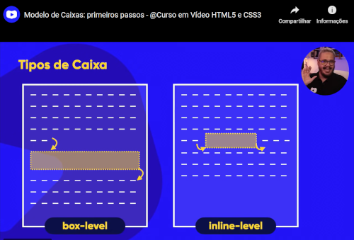
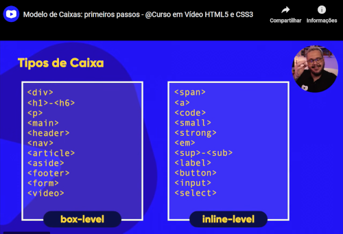
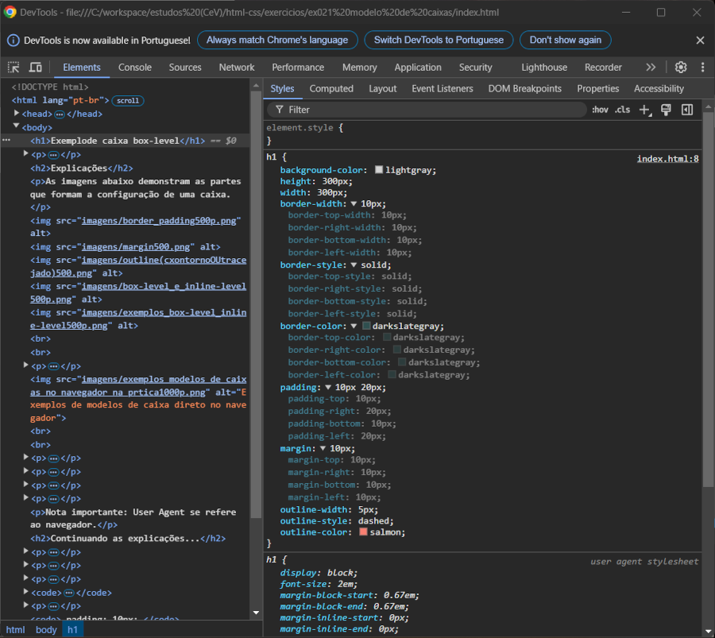

Parágrafos também sao exemplos de box-level, mas os links são exemplos de caixas inline-level. Vamos verc como tudo isso funciona.
As imagens abaixo demonstram as partes que formam a configuração de uma caixa.
   Importante: Um elemento 'H1' é do tipo box-level e um elemento 'A' seria do tipo inline-level, mas podemos transformar um H1 em inline-level e vice-versa usando a tag "display", como mnostra a linha de codigo desta pagina para o elemento A, que foi transformado em box-level. Isto é util para mudar o tamanho de espaço que a caixa do elemento ocupa. Tambem pode-se usar o parametro inline-block, que sera inline, mas vai ter tambem caracteristicas de bloco (box-level).
Exemplo:
h1 {
display: inline;
}
a {
display: block;
}
A imagem abaixo mostra as configurações do navegador para as caixas de cada elemento (h1, p, etc). Eu acesso esta tela clicando com botão direito do mouse no navegador e clicando depois em "inspecionar" e indo na guia "elementos". Ou acessando as opções do navegador e indo em "ferramentas para desenvolvedores".

Esta aba com os elementos da caixa é mais do que apenas para simples conferencia. Passando o mouse acima dos elementos da configuração da caixa, vemos uma seleção que destaca o item da caixa na pagina e, mais importante, clicando no valor descrito do item (height: 300px; por exemplo), podemos alterar este valor e a pagina mostra automaticamente como ficará o tamanho da caixa com esta alteração, porém sem alterar o valor dentro do código.
Isto facilita demais a visualização e edição dos elementos previamente, permitindo que vejamos como ficará a pagina antes de editarmos, poupando tempo gasto com muitas alterações e correções ate o resultado final.
Abaixo temos o codigo desta pagina para demonstrar que para termos acesso ao item de caixa que queremos visualizar (height,weight, border, padding, etc) na aba "inspecionar", precisamos adiciona-lo ao codigo, pois estes itens de caixa não aparecem automaticamente quando abrimos a aba "inspecionar".
style
h1 {
background-color: lightgray;
height: 300px;
width: 300px;
border-width: 10px;
border-style: solid;
border-color: darkslategray;
padding-top: 10px;
padding-right: 10px;
padding-bottom: 10px;
padding-left: 10px;
}
/style
Nota importante: User Agent se refere ao navegador.
Para que a caixa com seu texto fique sempre no centro do navegador, precisamos usar o parametro 'auto' na tag 'margin'. "margin: auto;"
As configurações 'margin', 'padding' e 'border' dividem-se em top, right, bottom e left. Onde cada uma dessas partes pode ter um tamanho ou volume diferente.
Podemos simplificar a escrita destes blocos de codigo. Como no exemplo de codigo acima, temos:
padding-top: 10px;
padding-right: 10px;
padding-bottom: 10px;
padding-left: 10px;
Se todos os valores forem iguais, podemos simplificar este bloco com apenas uma linha de codigo:
padding: 10px;
Que tambem pode ser escrito desta forma mais extensa:
padding: 10px 10px 10px 10px;
Podemos tambem usar um valor para o top e bottom, e outro para right e left. Sendo o primeiro valor para top e bottom e o segundo para as laterais da caixa:
padding: 10px 20px;
Que varia tambem para:
margin: 10px auto 20px auto;
Onde top e bottom tem valores definidos, e as laterais da caixa se ajustam automaticamente para ficar sempre no meio do navegador.
Ja para o item "outline", as configurações são diferentes, mas é basicamente parecido.
Importante: Devemos sempre escrever o codigo destas configurações de caixa respeitando a ordem TOP, RIGHT, BOTTOM, LEFT (sentido horario). Pois assim tambem lembraremos como é simplificado quando precisamos simplificar uma configuração de border, padding, etc.
Na imagem abaixo podemos ver que ha muitas configurações que podemos fazer com cada item das caixas. Cheguei nesta tela clicando em 'inspecionar' (dev tools), depois na setinha de itens como 'border' que são setadas automaticamente pelo user agent (navegador).
